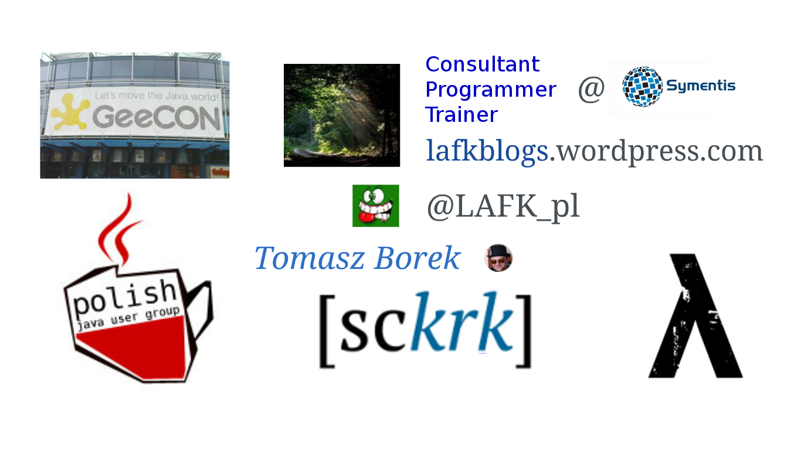

Java 9 @ JDD
Java 9 content @ JDD, with 2 extras
Tomasz Borek, @LAFK pl,
What?
Refactoring your code to Java 9 modules - monolith→modules (strategies, tools, patterns)
9 Lives of Java 9 - overview, history, code
Get ready for j.u.c.flow! - reactive streams in 9 vs RxJava and Reactor on 8
Java9 and REPL - build web-app in REPL
Long awaited Java 9 - 8→9, most important features
Who? Presentations
Refactoring your code to Java 9 modules - Rabea Gransberger
9 Lives of Java 9 - Tomasz Borek
Get ready for java.util.concurrent.flow! - Piotr Wittchen
Java9 and REPL - Jakub Marchwicki
Long awaited Java 9 - Ekatarina Bulyshkina
Extras
EXTRAs are not strictly Java 9, but…
What?
Quo vadis JEE? - JEE 8 new features and plans for JEE 9
Poza horyzont zdarzeń, czyli Java 10 - JDK10: Amber, Panama, Valhalla
Who?
Quo vadis JEE? - Wojciech Oczkowski
Poza horyzont zdarzeń, czyli Java 10 - Jarosław Pałka
Schedule for day 1
Topic | Start | End | Track | Conflicts |
Modules | 9:30am | 10:15am | 4 | |
9 lives | 11:30am | 12:15pm | 2 | |
j.u.c.Flow | 3:00pm | 3:45pm | 4 |
Schedule for day 2
Topic | Start | End | Track | Conflicts |
JEE | 10:30am | 11:15am | 3 | |
REPL | 11:30am | 12:15pm | 1 | Java 10 |
Java10 | 11:30am | 12:15pm | 3 | REPL |
8→9 | 2:30pm | 3:15pm | 4 |
In details!
Each image is a link, click to go to talk page.
Refactoring your code to Java 9 modules
9 lives of Java 9
Overview, history, code

Get ready for juc.Flow!
Quo vadis JEE?
JEE 8 is now released; new features? And what about JEE 9 (w.r.t. cloud, microservices)?
Java9 and REPL
Build real web-app in REPL!
Poza horyzont zdarzeń: Java 10
JDK10, Amber, Valhalla, Panama
Long awaited Java 9
8→9, best features, perf&compiler and compatibility
About me
9 Lives of Java 9: overview, history, code

Day 1, 11:30AM, track 2!
See you there!